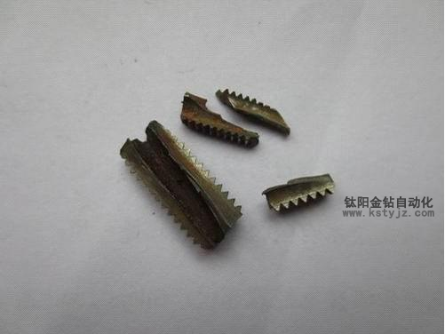

絲錐折斷技術分析（最新篇）
文章出處：鈦陽金鑽責任編輯：kstyjz人氣：發表時間：2015-02-11 10:47
絲錐折斷技術分析（最新篇）
文/鈦 陽
文/鈦 陽

攻牙機在精加工或者後加工領域的重要性已經尤為明顯，尤其是自動攻牙機。但是因為一些原因導致的絲錐易折斷令精加工的企業頭痛，卻始終不能完全解決這個問題，下面昆山鈦陽金鑽自動化設備有限公司的技術人員結合公司實際積累的經驗，查閱相關文獻得出最為全面的技術分析以及解決之道。1.絲錐選擇不當：（品牌）
這主要是指絲錐與所加工材料不匹配，這個問題普遍存在，絲錐使用者尤其是絲錐供應商應該有足夠的重視。以前國內廠家總覺得進口的好，貴的好，其實是適合的好。隨著新材料的不斷增加和難加工，為了適應這種需要，刀具材料的品種也在不斷地增加，這就需要在攻絲前，選擇好合適的絲錐產品。對硬度太大的攻件應該選用高品質絲錐，如含鈷高速鋼絲錐、硬質合金絲錐、塗層絲錐等。此外，不同的絲錐設計應用在不同的工作場合。例如，絲錐的排屑槽數目、大小、角度等等對排屑性能都有影響。
2.絲錐品質不好:(材質)
主要是材料，刀具設計，熱處理情況，加工精度，塗層質量等等。例如，絲錐截面過渡處尺寸差別太大或沒有設計過渡圓角導致應力集中，使用時易在應力集中處發生斷裂。柄、刃交界處的截面過渡處離焊口距離太近，導致複雜的焊接應力與截面過渡處的應力集中相迭加，產生較大的應力集中，導致絲錐在使用中斷裂。例如，熱處理工藝不當。絲錐熱處理時，若淬火加熱前不經預熱、淬火過熱或過燒、不及時回火及清洗過早都有可能導致絲錐產生裂紋。這也是國內絲錐整體性能不如進口絲錐的重要原因。
3.底孔孔徑偏小：（孔徑）
這個很好理解。例如，加工M10×1.5螺紋時，用切削絲錐應該用選擇直徑8.5mm鑽頭打底孔，如果使用8.2mm鑽頭來打底孔，攻絲時絲錐所需切削的部分必然增大，進而就有可能使絲錐折斷。建議根據絲錐的種類及攻件材質的不同選擇正確的底孔直徑。對攻絲底孔尺寸的計算以及不同螺紋旋合度與底孔尺寸的選擇，一個合格的絲錐經銷商必須有所瞭解。
4.切削液品質不好：（切削液）
這點國內的許多企業都開始關注起來，許多採購了國外刀具和機床的公司有非常深刻的體會，切削液品質出現問題，加工出的產品質量很容易出現毛刺等不良情況，同時絲錐壽命也會有很大的降低。
5.切削速度與進給量不合理：（機台）
當加工出現問題時，國內大部分用戶是降低切削速度和減小進給量，這樣絲錐的推進力度降低，其生產的螺紋精度因此被大幅度降低，這樣加大了螺紋表面的粗糙度，螺紋孔徑和螺紋精度都無從控制，毛刺等問題當然更不可避免。但是，給進速度太快，導致的扭矩過大也容易導致絲錐折斷。
6.工件材質問題：（工件）
工件材質不純，局部有過硬點或氣孔，導致絲錐瞬間失去平衡而折斷。
7.機床沒有達到絲錐的精度要求：（同心度）
機床和夾持體也是非常重要的，尤其對於高品質的絲錐，只要一定精度的機床和夾持體才能發揮出絲錐的性能。常見的就是同心度不夠。攻絲開始時，絲錐起步定位不正確，即主軸軸線與底孔的中心線不同心，在攻絲過程中扭矩過大，這是絲錐折斷的主要原因。
8.操作人員技術與技能沒有達到要求：（人員素質）
以上的這些問題，都需要操作人員做出判斷或向技術人員反饋，但目前國內絕大部分操作人員培訓重視不夠。例如，用螺旋槽絲錐或直槽絲錐加工盲孔螺紋時，當絲錐即將接觸孔底的瞬間，操作者並未意識到，仍按未到孔底時的攻絲速度給進，或排屑不暢時強行給進導致絲錐折斷。
由上可見，造成絲錐斷裂的原因可謂多種多樣，機床、夾具、工件、工藝、夾頭及刀具等等都有可能。而實際上，不論是使用傳統的攻絲設備還是昂貴的CNC設備，都不能指望一勞永逸。因為機器只會根據預先設定的參數不斷重複攻絲，只有在最後用螺紋規檢測時才會發現合不合格，不合格的產品問題如不能很好的解決則不得不報廢。因此，在大型企業對於大型、昂貴、精密的工件加工，即便是花高價錢用進口的絲錐也不用國產的，因為一旦絲錐斷裂造成工件報廢，付出的代價是相當的大。老外挾技居奇，絲錐價格高居不下，企業辛苦創造的相當一部分利潤就這樣被老外拿去，怎不令人痛心。
上一篇：攻牙機加工銅鋁材料工件時的注意事項（內部經 | 下一篇：動力頭皮帶輪的更換技巧


推薦文章
- 影響電動攻牙機性能的
- 何以自動攻牙機可以做
- 攻螺紋前鑽底孔直徑和
- 鑽孔機如何選擇,台式自
- 攻牙油 百 科
- 自動鑽床自動攻牙機離
- SPS-全自動鑽孔倒角攻牙
- 攻牙機原理,多功能機床
- 動力頭基本構造及相關
- 自動攻牙機深孔。小孔